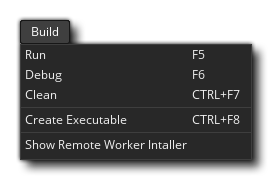

Im Build-Menü können Sie Ihr Projekt entweder zum Testen, Debuggen oder als endgültige ausführbare Datei erstellen. Die verfügbaren Optionen sind:
- Ausführen - Führen Sie Ihr aktuelles Projekt auf der ausgewählten Zielplattform zum Testen aus. Für die verschiedenen Kompiliermöglichkeiten, die beim Kompilieren zur Verfügung stehen, lesen Sie bitte den Abschnitt Kompilieren. Beachten Sie, dass dieser Befehl dem Drücken der Schaltfläche Ausführen entspricht
in der IDE.
- Debuggen - Führen Sie Ihr aktuelles Projekt zum Testen mit dem Debugger aus, sodass Sie detaillierte Leistungsinformationen anzeigen und Fehler oder Probleme beheben können. Weitere Informationen zum Debuggen finden Sie im Abschnitt Debugging. Beachten Sie, dass dieser Befehl dem Drücken der Debug- Schaltfläche entspricht
in der IDE.
- Sauber - GameMaker Studio 2 speichert einen Cache von Dateien, um die Kompilierzeit beim Testen zu verkürzen. Manchmal kann ein "veralteter" Cache jedoch zu seltsamen und unerwarteten Fehlern in Ihrem Spiel führen. In diesem Fall sollten Sie zuerst den Cache von hier säubern und erneut testen. Es ist auch eine gute Idee, den Cache zu säubern, bevor Sie eine endgültige ausführbare Datei für die Zielplattform erstellen. Beachten Sie, dass dieser Befehl dem Drücken der Schaltfläche " Cache leeren" entspricht in der IDE.
- Create Executable - Hiermit wird das aktuelle Projekt kompiliert und eine ausführbare Datei (oder Dateien) für die Zielplattform erstellt. Es öffnet zuerst den Datei-Explorer, so dass Sie auswählen können, wo Sie das Projekt speichern und dann das Spiel kompilieren möchten. Siehe den Abschnitt über Kompilieren für weitere Informationen über die Kompilierung Ziele einrichten. Beachten Sie, dass dieser Befehl dem Drücken der Schaltfläche Execute Executable entspricht
in der IDE.
- Zeigen Sie Remote - Worker Installer - Es öffnet sich ein Datei - Explorer - Fenster auf dem Standort des Installationsprogramm für die Remote - Worker - Tool (siehe hier für weitere Informationen über Remote - Arbeiter).